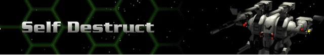

› |
› |
Self Destruct |

Self-Detonator – each Herc can be configured with a Self Detonator device which is essentially a trigger that explodes the Herc and takes out or damages any Cybrids nearby. The size of the Herc determines the size of the explosion.